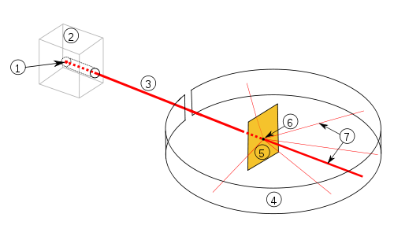

Particle physics or high-energy physics is the study of fundamental particles and forces that constitute matter and radiation.
The field also studies combinations of elementary particles up to the scale of protons and neutrons,
while the study of combinations of protons and neutrons is called nuclear physics.
The fundamental particles in the universe are classified in the Standard Model as fermions (matter particles) and bosons (force-carrying particles).
There are three generations of fermions, although ordinary matter is made only from the first fermion generation.
The first generation consists of up and down quarks which form protons and neutrons, and electrons and electron neutrinos.
The three fundamental interactions known to be mediated by bosons are electromagnetism, the weak interaction, and the strong interaction.
Quarks form hadrons, but cannot exist on their own.
Hadrons that contain an odd number of quarks are called baryons and those that contain an even number are called mesons.
Two baryons, the proton and the neutron, make up most of the mass of ordinary matter.
Mesons are unstable and the longest-lived last for only a few hundredths of a microsecond.
They occur after collisions between particles made of quarks, such as fast-moving protons and neutrons in cosmic rays.
Mesons are also produced in cyclotrons or other particle accelerators.
Particles have corresponding antiparticles with the same mass but with opposite electric charges.
For example, the antiparticle of the electron is the positron.
The electron has a negative electric charge, the positron has a positive charge.
These antiparticles can theoretically form a corresponding form of matter called antimatter.
Some particles, such as the photon, are their own antiparticle.
These elementary particles are excitations of the quantum fields that also govern their interactions.
The dominant theory explaining these fundamental particles and fields, along with their dynamics, is called the Standard Model.
The reconciliation of gravity to the current particle physics theory is not solved;
many theories have addressed this problem, such as loop quantum gravity, string theory and supersymmetry theory.
Experimental particle physics is the study of these particles in radioactive processes and in particle accelerators such as the Large Hadron Collider.
Theoretical particle physics is the study of these particles in the context of cosmology and quantum theory.
The two are closely interrelated: the Higgs boson was postulated theoretically before being confirmed by experiments.